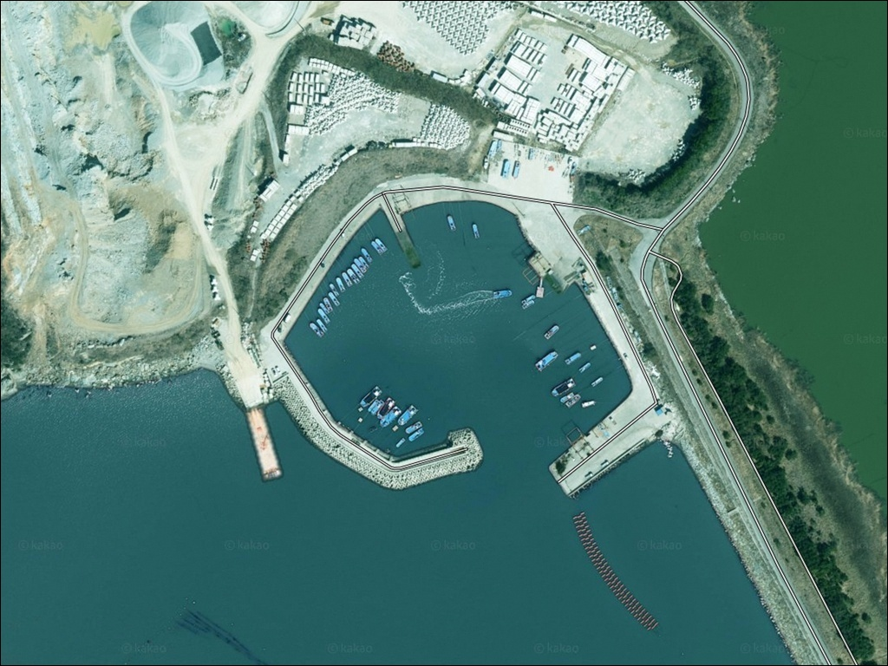
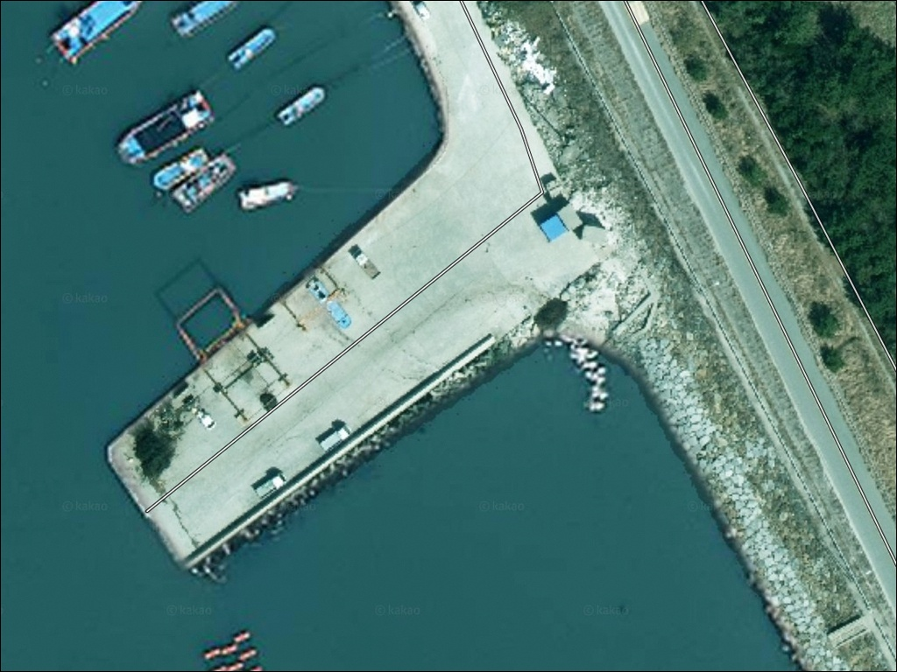
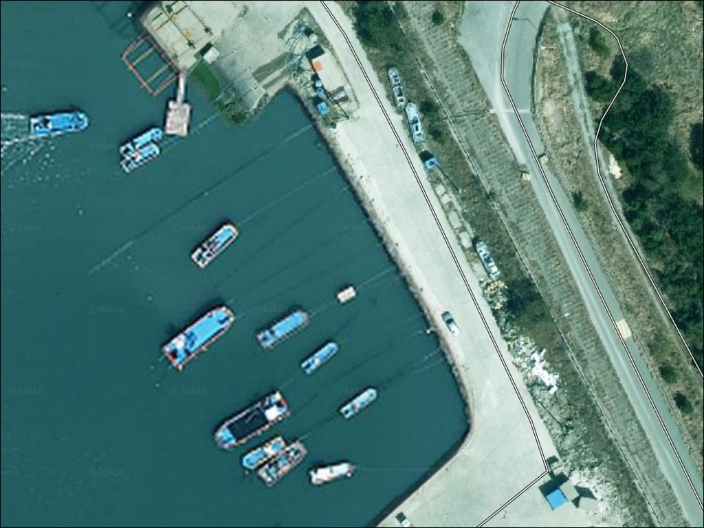
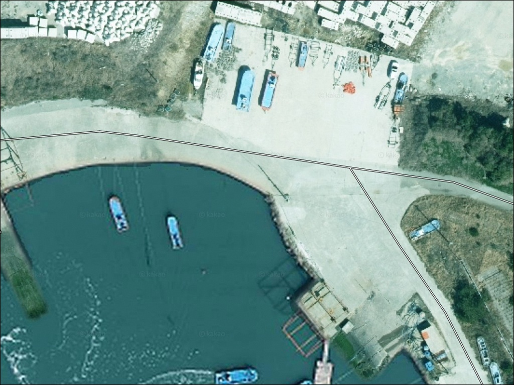
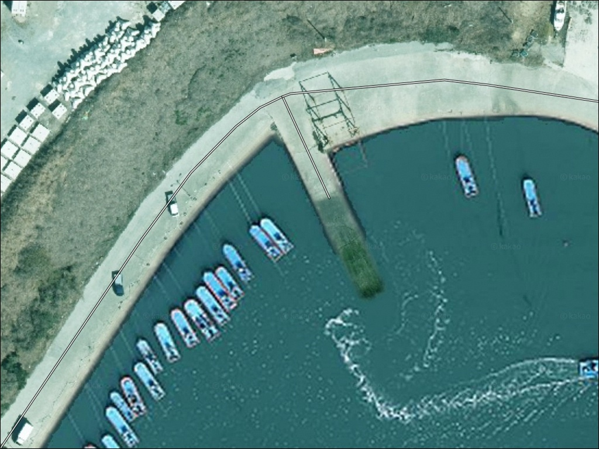
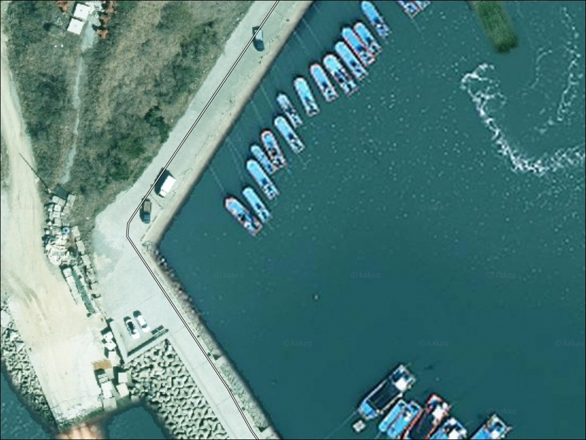
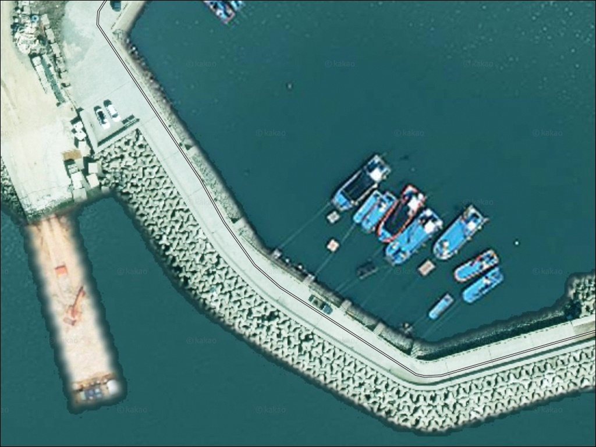
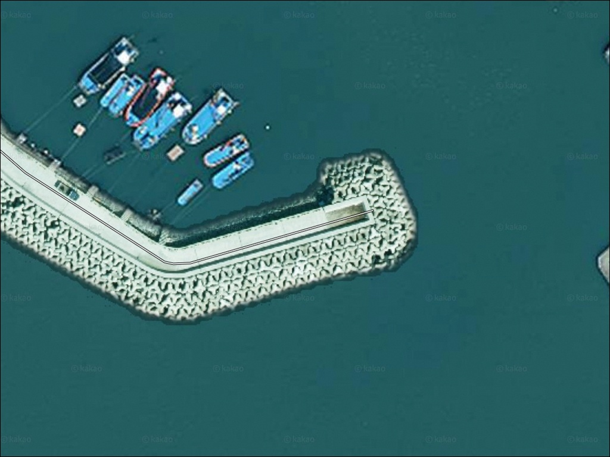
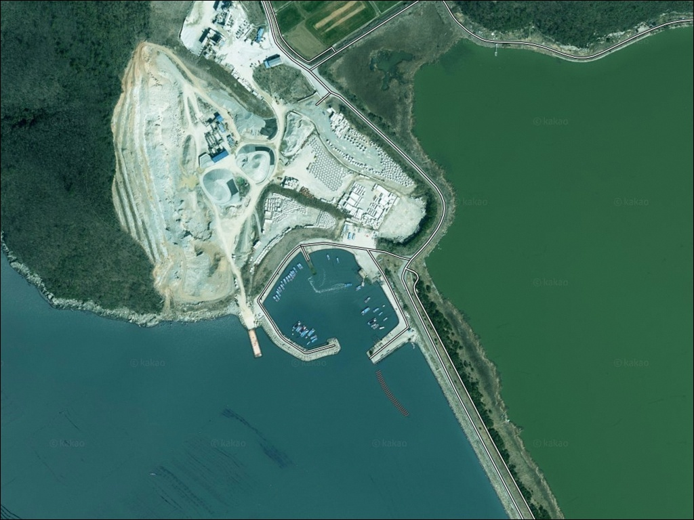

이 페이지에는 광고(제휴 링크 포함)가 있으며, 광고 링크를 통해 구매하면 운영자가 판매 수익 또는 수수료를 받을 수 있습니다. 포인트 사진: 카카오맵 스카이뷰·로드뷰. 이 페이지의 지도·사진 이미지는 카카오맵의 실제 서비스 이미지와 다를 수 있습니다.

신정방파제
전남 완도군 완도읍 대신리 1284
완도 서쪽 해역은 조류가 강한 구간입니다.
신정방파제는 이 조류를 정면으로 받는 외항 구조로,
사리 전후에 진입하면 어떤 채비를 써도
흘러버려 낚시가 어려워집니다.
물때 파악이 이 포인트 공략의 첫 번째 조건입니다.
완도 서쪽 해안도로를 따라 이어진 대신리 일대는
완도읍 중심에서 서쪽으로 자리한 소규모 마을 권역입니다.
완도방조제와 인접한 이 방파제는
방파제 외항이 남해 방향으로 열려 있는 구조로,
회유성 어종이 드나드는 조건을 갖추고 있습니다.
이 글은 신정방파제의 진입 환경, 지형 구조,
낚시 방식 적합성, 차박 여건에 집중합니다.
조황 단정이나 특정 어종 보장은
이 글의 범위에 포함되지 않습니다.

신정방파제가 위치한 대신리는
완도읍 중심부인 군내리에서
서쪽 해안도로를 따라 약 5~7km 거리에 있습니다.
완도 서측 해안도로는 왕복 2차선 수준이며,
포인트에 가까워질수록
차량 한 대 통과 수준으로 좁아지는 구간이
나타납니다.
내비게이션으로 대신리 1284를 입력하면
마을 안쪽 길을 통과하는 경로로 안내될 수 있습니다.
마을 진입 전에 위성지도로 경로를 한 번 확인해두면
좁은 골목에서의 당황을 줄일 수 있습니다.
대형 SUV나 루프탑 캠핑 장비를 갖춘 차량이라면
진입로 폭 사전 확인이 특히 중요합니다.
방파제 시작 지점 부근에 평탄한 공터가 있어
소형~중형 차량 기준으로 1~2대 정도 주차가 가능한 수준입니다.
어선 이동 동선과 접안 공간을 피한 자리에 주차하는 것이
기본 매너입니다.

대신리는 완도읍 외곽 해안 마을로
민가 밀집도가 낮은 편입니다.
방파제 입구 평탄 공터를 기준으로 하면
야간 차량 통행이 많지 않고
프라이버시 확보는 상대적으로 유리한 환경입니다.
다만 주차 공간 자체가 넓지 않아
차박을 메인 목적으로 두기에는 제한이 있습니다.
완도 서쪽 해안은 계절에 따라
북서풍의 영향을 직접 받는 방향입니다.
바람이 강한 날 체류 시에는
풍향과 방파제 방향을 고려해
바람을 등지는 쪽에 차를 세우는 편이
체류 안정성에 유리합니다.
가로등 밀도가 높지 않아
야간에는 방파제 주변이 어두운 환경입니다.
헤드랜턴 등 개인 조명 장비는 필수이며,
낚시와 차박을 겸할 경우
조명은 필요한 범위에만 사용하는 매너가
인근 어민과의 마찰을 줄입니다.

신정방파제 반경 3km 이내에서
편의점이나 마트를 기대하기는 어렵습니다.
대신리는 완도읍 외곽 해안 마을로
완전 자급 체제로 진입하는 것이 현실적인 준비 방식입니다.
식수, 얼음, 낚시 소품, 연료 모두
출발 전에 갖춰야 합니다.
반경 약 6~7km 거리의 완도읍 중심부(군내리·가용리)에는
24시간 편의점과 낚시용품점이 있습니다.
출발 전 완도읍에서 소품을 보충한 뒤
포인트로 이동하는 동선이
이 권역에서 가장 효율적인 방법입니다.
응급 상황이 발생했을 때
완도읍 중심부까지 이동 시간이 걸리므로,
비상약품과 수분 보충용 물은 충분히
챙겨두는 것이 기본입니다.

신정방파제 방문 전에 가장 먼저 확인할 것은
물때입니다.
완도 서쪽 해역은 조류가 강한 구간으로,
사리 전후에는 방파제 외항 조류가 세져
채비 컨트롤이 어려워집니다.
바다타임에서 완도 기준 물때를 확인하고
조금 전후 또는 정조 전후 타이밍을 맞춰
출발 시각을 잡는 것이 기본 전략입니다.
완도 서측 해안은 북서풍의 영향을 직접 받는 방향입니다.
출조 당일 아침 기상청 예보를 다시 확인하고,
풍속과 파고가 안전 기준 이상일 경우에는
대안 포인트로 이동하는 것이
헛걸음을 막는 판단입니다.
외항 테트라포트 구간에서는 미끄럼 방지 신발이
필수 장비입니다.
외항 테트라 지형 특성상 채비 손실이 빈번한 편입니다.
여분 채비는 예상보다 넉넉하게 준비하고,
어선 접안 공간과 어구를 피한 자리를
먼저 확인한 뒤 낚시 위치를 잡는 것이
기본 매너입니다.
신정방파제 주변은 다도해해상국립공원
인근 지역에 해당할 수 있습니다.
지정 구역 외 야영·취사는 원칙적으로 금지되어 있으므로
출발 전 완도군청 또는 국립공원관리공단에 확인하는 것이
안전한 준비입니다.

신정방파제는 완도방조제 옆에서
서쪽으로 길게 뻗은 구조입니다.
메인 방파제는 중간에 꺾이는 지점이 있으며,
끝단으로 갈수록 수심이 깊어지는 형태입니다.
외항 전 구간에는 테트라포트가 배치되어 있고,
끝단 조류 합수 지점이 핵심 공략 자리입니다.
방파제 외항이 남해 방향으로 열려 있어
완도 서쪽 해역의 조류 흐름을 직접 받는 구조입니다.
수심은 방파제 끝단 기준으로
6~10m 범위로 추정되며,
끝단에서 급변하는 수심 패턴이
회유성 어종의 이동 통로 역할을 합니다.
방파제 끝단 조류 합수 지점은 수심이 급변하며
루어 반응이 살아나는 구간입니다.
내항 쪽은 어선 정박 공간으로 활용되며,
발판이 비교적 평평한 석축 또는 직벽 구조입니다.
수심은 외항보다 얕은 편이나,
조류가 잠잠한 내항 입구 구간은
야간 찌낚시 자리로 활용하기 적합한 조건입니다.
출조 전에 완도 신정방파제 조황 또는
완도읍 방파제 조황으로 검색해보시기 바랍니다.

이 포인트에서 지형 조건과 가장 잘 맞는 방식은
원투낚시입니다.
방파제 꺾이는 지점을 기준으로
외항 방향으로 70~100m 장타를 보내면
수심 변화 구간을 노릴 수 있습니다.
조류가 느려지는 정조 타이밍이
원투 채비가 바닥에 안정되는 조건을 만들어줍니다.
릴찌낚시도 이 포인트 구조에 잘 맞습니다.
외항 테트라포트 경계 구간에서
유동찌 채비를 흘리면 감성돔을 기대해 볼 수 있습니다.
조류 방향을 먼저 파악한 뒤
테트라 끝단 방향으로 흘리는 방식이
이 지형에서 기본 운용법입니다.
릴찌낚시란 릴을 장착한 낚싯대에 찌를 달아
조류를 따라 채비를 자연스럽게 흘리는 낚시 방식입니다.
에깅도 방파제 외측과 끝단에서 운용할 수 있습니다.
완도 해역은 계절에 따라
갑오징어와 무늬오징어가 접근하는 지역입니다.
방파제 외항 쪽에서 에기를 멀리 보낸 뒤
천천히 끌어오면서
수심층을 다양하게 탐색하는 방식이 어울립니다.
볼락 라이트게임도 암초 경계 구간에서
야간에 소형 지그헤드 채비로 노려볼 수 있습니다.

신정방파제의 조류가 너무 강하거나
주차 공간이 여의치 않을 때는
화흥포항 방파제가 첫 번째 대안입니다.
신정방파제에서 약 1km 거리로 가까우며,
규모가 더 크고 발판이 안정적입니다.
같은 해안선 조류 구조를 공유하면서도
진입과 주차 여건이 더 수월한 편입니다.
완도읍 중심부로 약 7km 이동하면
노래하는 등대 방파제가 있습니다.
완도군에서 낚시를 공식 허용한 포인트로
야간 낚시도 가능한 환경입니다.
편의점과 식당이 인접해 있어
보급과 낚시를 동시에 해결할 수 있는 동선으로
활용하기 좋습니다.
완도읍 인근에는 정도리 갯바위도 있습니다.
신지면 방면으로 이동하면
해안 주차 여건이 더 넓은 포인트들도
찾아볼 수 있어,
신정방파제를 메인으로 두고
이 권역을 순환하는 동선이
완도 서부권 효율적 탐방 방식입니다.
완도읍과 가깝고 서측 해안도로로 진입이 수월한 만큼,
플랜B 이동 여건은 이 권역에서 유리한 편입니다.

원투낚시와 찌낚시, 에깅을
한 자리에서 복합 운용하고 싶은 낚시인이라면
신정방파제는 지형 조건이 잘 맞는 포인트입니다.
외항 조류 구조와 방파제 끝단 수심 변화 구간이
다양한 공략 방식을 허용하고,
완도읍 대표 포인트들과의 거리도 가깝습니다.
반면 편의시설 없는 해안 마을 포인트라
자급 준비 없이 찾아가면 불편함이 큽니다.
조류 타이밍 없이 사리 전후에 방문하면
채비가 흘러 낚시가 어려워지는 상황을
맞닥뜨릴 수 있습니다.
물때 확인, 진입로 사전 점검, 자급 준비,
이 세 가지를 갖추고 간다면
완도 서부권의 조용한 포인트로
기억에 남을 수 있는 곳입니다.
외항 조류 옆에서 낚싯대를 드리우고
조용한 어촌 마을 분위기 속에
하룻밤 머무는 낚시 차박 여행자에게,
완도읍 인프라와의 거리는
준비만 갖추면 문제가 되지 않는 포인트입니다.